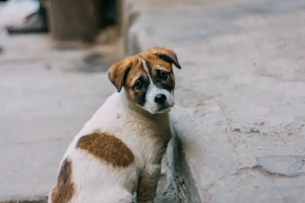
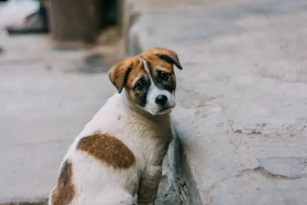

1. Adopt, Don’t Shop
Choosing an Indie dog instead of buying a pedigree is one of the most powerful statements you can make. These dogs are resilient, intelligent, and deeply loyal. By opening your home to an Indie, you’re giving a life that might have been overlooked a chance to thrive.
2. Foster Temporarily
Not ready to adopt? Even a temporary home can save a life. Fostering gives an abandoned or injured dog the comfort and care they need until a permanent family comes along.
3. Support Sterilisation and Vaccination Drives
Participating in or sponsoring sterilisation and vaccination programs directly reduces suffering. It prevents overpopulation, controls disease, and ensures healthier communities for both people and animals.
4. Feed Responsibly
A bowl of food or clean water can mean survival for a street dog. Feed them in safe, quiet areas away from traffic, and clean up afterward to maintain harmony with your neighbors. Small, thoughtful gestures can be life-changing for them.
5. Build or Donate Street Shelters
Even a simple shaded spot or an old blanket can protect a dog from the harsh sun or cold rain. Small acts of kindness like these can bring comfort to an animal facing the elements alone.
6. Advocate and Educate
Speak up when you see cruelty or misinformation. Conversations with neighbors, schools, or community groups can change perceptions. Sharing your voice can build a culture of compassion.
7. Report Abuse and Neglect
If you witness cruelty, do not stay silent. Contact local animal welfare groups or authorities. India’s Prevention of Cruelty to Animals Act, 1960, exists to protect these lives—use it to ensure justice.
8. Support Local NGOs and Rescuers
Donations—whether funds, food, or your time—help the people on the ground who work tirelessly to save, treat, and rehome Indies. Your contribution, no matter how small, strengthens their ability to keep going.
9. Encourage Community Participation
Real change only happens when people actually come together. Talk to your neighbors or get your housing society involved to set up safe feeding spots, support sterilisation and vaccination drives, and spread the word about taking care of Indie dogs. Even small efforts add up, and if everyone pitches in, we can seriously change the way these dogs are treated and make life better for them.

 
